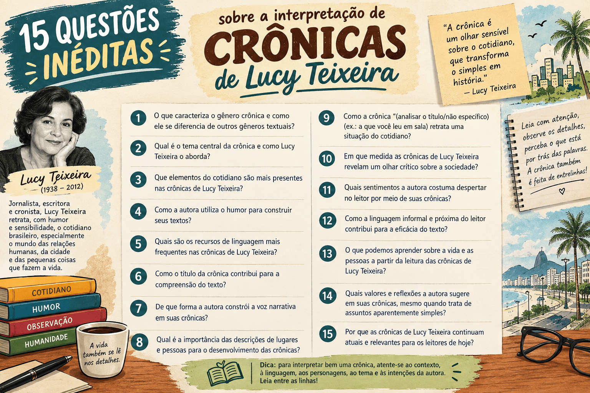

A São Luís de 1947: Interpretação de Texto com as Crônicas de Lucy Teixeira
Crônicas de Lucy Teixeira: Cenas do Cotidiano de São Luís – 1947 (organizada por Ceres Costa Fernandes) é uma das obras literárias obrigatórias mais ricas e singulares do PAES UEMA 2027. Publicados originalmente nas páginas do jornal O Imparcial, sob o pseudônimo de Maria Karla ou com sua própria assinatura, os textos registram a capital maranhense no pós-Segunda Guerra Mundial, flagrando uma cidade cindida entre a pacatez de suas tradições coloniais e os primeiros solavancos da modernização urbana.
A prosa de Lucy Teixeira afasta-se da mera crônica de costumes ou do factual jornalístico ligeiro. A autora mobiliza uma dicção lírico-filosófica, refinada pelo diálogo com a Geração de 45 e as artes plásticas, para transformar cenas banais da urbe — a espera pelo bonde na Praça João Lisboa, o atropelamento de uma ave na Rua de Santana, a ida ao circo ou o trabalho árduo na Praia Grande — em densas reflexões sobre a memória, a transitoriedade do tempo, a exclusão social e a própria condição humana.
Neste conteúdo preparado sob medida para o vestibular da UEMA, você dominará as chaves de interpretação textual, vocabulário contextual, figuras de linguagem e mecanismos sintático-semânticos presentes em crônicas centrais como O Abrigo, Os Pombos e O Circo. Ao final, teste sua preparação em um quiz com 10 questões inéditas comentadas no padrão exato da banca.

O que são as Crônicas de 1947 de Lucy Teixeira?
Ao regressar a São Luís no final de 1946, após graduar-se em Direito em Minas Gerais e conviver com nomes exponenciais do Modernismo e da crítica de arte (como Mário Pedrosa, Murilo Rubião, Fernando Sabino e Otto Lara Resende), Lucy Teixeira deparou-se com um meio literário provinciano ainda muito apegado ao Romantismo tardio e ao Parnasianismo. Ao lado de Bandeira Tribuzi, Ferreira Gullar e outros jovens intelectuais, tornou-se artífice da renovação estética das letras maranhenses.
Entre janeiro e dezembro de 1947, a escritora assinou crônicas diárias em espaço exíguo de O Imparcial, disputando a atenção dos leitores com anúncios de tônicos, notícias do comércio e notas da alta sociedade. Essa contingência espacial exigiu concisão lapidar, ritmo envolvente e agudeza no tratamento do detalhe visual, aproximando a literatura da pintura de vanguarda.
Classificação e aspectos da obra
- Autora: Lucy Teixeira (1922–2007) / Organizadora: Ceres Costa Fernandes.
- Gênero predominante: Crônica (prosa poética, crônica lírico-filosófica, minicontos e crônica social).
- Contexto cultural: Pós-guerra, Modernismo de 1945 / Renovação literária e plástica maranhense.
- Recorte temporal e espacial: Ano de 1947; São Luís do Maranhão (Praça João Lisboa, Rua de Santana, Largo do Carmo, Praia Grande).
- Foco narrativo: Primeira pessoa predominantemente íntima, conversacional e cúmplice do leitor.
- Eixos temáticos recorrentes: A passagem inexorável do tempo; a infância perdida; a dignidade dos marginalizados; a solidão; o lirismo das coisas miúdas; a invasão da máquina e a impessoalidade da metrópole em formação.
Atenção ao perfil da UEMA: A gramática aplicada ao texto
A banca do PAES UEMA costuma utilizar as crônicas regionais não apenas para perguntas de interpretação global, mas sobretudo para cobrar semântica contextual, valores expressivos de conectivos e figuras de linguagem. Não decore termos isolados: atente sempre para o valor semântico que o vocábulo assume na malha do texto.
Entendendo os Eixos Interpretativos e o Vocabulário
Para obter pontuação máxima em Língua Portuguesa e Literatura, analise com atenção os três textos que condensam as principais estratégias estilísticas da autora.
1. O Espaço Urbano e a Sociabilidade: O Abrigo (23/02/1947)
A construção de um ponto de parada coberto na Praça João Lisboa é o mote para a autora discutir como a infraestrutura viária transforma as relações humanas. Em vez de celebrar friamente a engenharia, Lucy investiga a intimidade:
A Dimensão Pública e Concreta
O abrigo atende a necessidades práticas imediatas: proteger a população contra a inclemência do sol equatorial e a inverneira (estação das fortes chuvas), ordenando as longas filas para os bondes e ônibus que rumam a bairros como Jordoa, Anil e João Paulo.
A Dimensão Íntima e "Particularíssima"
A cronista conclui que a praça ganha vida porque o monumento se torna palco de conversas fortuitas, namoros e reencontros. Ao qualificá-lo como local de acontecimentos "simples quão significativos", estabelece um paradoxo em que a memória privada consagra a obra pública.
2. A Fragilidade da Vida e a Cidade Hostil: Os Pombos (08/11/1947)
Em Os Pombos, a observação dos telhados antigos da Rua de Santana desemboca em uma alegoria do atropelamento e da indiferença mecânica do trânsito moderno:
- Intertextualidade machadiana: A narradora faz alusão deliberada a Machado de Assis (a "poeira de ideias" em Quincas Borba) para justificar a humanização das aves, a quem atribui um diálogo "tête-à-tête, columbiforme".
- A velocidade como fratura: O automóvel e sua "roda vermelha girando" passam sem frear sobre a ave. O progresso veloz é surdo e insensível à harmonia colonial dos sobrados.
- Quebra de expectativa (o desfecho anticlimático): A reflexão compassiva da autora é interrompida pela chegada de um carroceiro humilde que recolhe o pombo morto resmungando: "vou levar para o jantar". O choque entre o olhar lírico-burguês e o pragmatismo da fome expõe a crua realidade socioeconômica da cidade.
3. A Cisão entre Infância e Idade Adulta: O Circo (23/01/1947)
Ao sentar-se na plateia de uma lona armada na capital, a cronista desconstrói a euforia circense, revelando o espetáculo como espelho da infância irrevogavelmente perdida:
- A topografia das emoções: Estabelece-se um contraste espacial nítido entre a "alta arquibancada" (onde o menino moreno gargalha com espontaneidade visceral) e as "responsáveis cadeiras numeradas" (onde adultos contidos sufocam o riso com medo do ridículo).
- A tirania da lucidez: O homem maduro que senta ao lado da narradora murmura amargurado: "Descobri o truque. E dito isto sofre." A necessidade racional de desmascarar a ilusão elimina a mágica poética da existência.
- A pureza infantil redentora: A crônica fecha com uma menina que exclama que o rosto do palhaço "parece uma estrela", devolvendo à cena a capacidade de maravilhamento que os adultos perderam.
Glossário Contextual de São Luís de 1947
- Inverneira (O Abrigo): Termo regional que designa a estação das chuvas copiosas e regulares do clima equatorial maranhense.
- Columbiforme / Columbinos (Os Pombos): Neologismo expressivo criado por Lucy Teixeira a partir do latim columba (pombo), empregado com intuito de metalinguagem lúdica.
- Conspurcar (O Circo): Verbo transitivo que significa macular, profanar, corromper a pureza ética e afetiva das palavras e sentimentos humanos.
- Porejar (O Circo): Transudar, brotar lentamente em gotas minúsculas através dos poros da pele.
- Aldraba (O Chamado): Peça metálica (argola ou martelo) presa às portas dos casarões coloniais de São Luís para bater e anunciar visitas.
- Poeira (Poeira): Gíria de época que nomeava os cinemas populares de bairro e as fitas de aventura/faroeste assistidas com euforia pelos meninos.
Estratégia de Leitura para o PAES UEMA
Sempre que a prova da UEMA explorar as crônicas de Lucy Teixeira, procure identificar a tensão entre o olhar lírico e o dado material. A autora utiliza fatos microscópicos para formular julgamentos amplos sobre a alienação urbana, o preconceito contra mulheres literatas, o drama do trabalho e a dignidade humana.
Quiz sobre as Crônicas de Lucy Teixeira (1947)
Quiz — Crônicas de Lucy Teixeira para o PAES UEMA (10 Questões Avançadas)
Questão 1 — No desfecho da crônica O Abrigo, a narradora sintetiza a importância da nova instalação afirmando que ela se eterniza no coração dos citadinos "se público, também particularíssimo como local de simples quão significativos acontecimentos pessoais". A relação de sentido entre os adjetivos público e particularíssimo fundamenta-se em:
Questão 2 — No excerto "O principal, o surpreendente é que, prevenidos contra o sol e a inverneira, possamos ainda fazer novas relações [...] local de simples quão significativos acontecimentos pessoais", a análise linguística e semântica dos termos destacados revela que:
Questão 3 — Na crônica Os Pombos, o atropelamento de uma das aves na Rua de Santana é narrado sob a seguinte observação: "O carro - foi como se nada tivesse acontecido - continuou rolando, a roda vermelha girando". Esse detalhe descritivo constrói uma representação da modernidade caracterizada por:
Questão 4 — O fechamento da narrativa de Os Pombos dá-se com a atitude do carroceiro que recolhe a ave morta exclamando "vou levar para o jantar". Do ponto de vista da estruturação do gênero crônica, tal desfecho:
Questão 5 — Ao registrar em Os Pombos que as aves mantinham uma conversa "tête-a-tête, columbiforme (permitam-se o adjetivo)" e invocar o romance Quincas Borba, de Machado de Assis, Lucy Teixeira faz uso de:
Questão 6 — Na crônica O Circo, a autora descreve os adultos sentados em "responsáveis cadeiras numeradas" enquanto as crianças vibram na arquibancada. A figura de linguagem empregada nessa qualificação das cadeiras é:
Questão 7 — Em O Circo, a narradora lamenta o "contínuo envergonhar-se do coração [...] e não contivesse o ensinamento maior da palavra que nós conspurcamos". O verbo destacado possui, no período, o sentido de:
Questão 8 — Diante do número do equilibrista em O Circo, o homem sentado ao lado da cronista contrai os lábios e murmura: "Descobri o truque. E dito isto sofre." Na economia do texto, esse sofrimento decorre:
Questão 9 — Na crônica Leopoldo (04/02/1947), Lucy Teixeira aborda o drama do pequeno jornaleiro com deficiência física que trabalha no Largo do Carmo. A reflexão da cronista destaca-se por:
Questão 10 — Em A Segunda Natureza (07/02/1947), ao narrar os dias vazios de um funcionário público aposentado que retorna involuntariamente à porta da repartição, a autora reflete sobre:
Resumo para revisão
- Crônicas de Lucy Teixeira (1947) documenta o cotidiano de São Luís no pós-guerra sob um olhar modernista, intimista e profundamente reflexivo.
- Em O Abrigo, a praça coletiva converte-se em patrimônio afetivo e subjetivo de seus frequentadores ("se público, também particularíssimo").
- Em Os Pombos, o atropelamento pela "roda vermelha" e a intervenção final do carroceiro confrontam a velocidade predatória da urbe e as carências da subsistência material com o lirismo da cronista.
- Em O Circo, a oposição espacial entre as "responsáveis cadeiras numeradas" e a arquibancada expõe a amargura da lucidez adulta diante da pureza do riso infantil.
- As figuras de linguagem (prosopopeia, antítese e metáfora) e os recursos metalinguísticos são marcas essenciais da autora que costumam ser exigidos nas questões da UEMA.
- Vocábulos como inverneira, columbiforme, conspurcar e porejar sintetizam o refinamento semântico que alia regionalismo a uma vasta cultura estética cosmopolita.
Conclusão
A leitura atenta das crônicas de Lucy Teixeira revela uma escritora que jamais encarou a produção jornalística diária como literatura menor. Pelo contrário, cada texto publicado n'O Imparcial em 1947 funciona como um bisturi lírico e sociológico, capaz de dissecar as contradições, as saudades e a beleza esquecida nas esquinas de São Luís.
Para o candidato ao PAES UEMA 2027, dominar as crônicas significa ultrapassar o enredo anedótico: é imprescindível examinar a arquitetura das frases, os sentidos figurados das palavras e a maneira como Lucy Teixeira coloca os tipos populares, as praças e os costumes maranhenses em diálogo permanente com as grandes angústias universais.
Perguntas frequentes
Qual a importância histórica das crônicas de Lucy Teixeira para o Maranhão?
Representam a consolidação da modernidade literária maranhense nos anos 1940. Lucy Teixeira rompeu com a retórica grandiloquente e parnasiana que dominava a imprensa da época, introduzindo uma prosa concisa, poética e atenta aos dramas e aos tipos anônimos da cidade.
Como o espaço urbano de São Luís aparece nas crônicas?
A cidade não é mero pano de fundo decorativo. São Luís atua como personagem viva: as ladeiras de pedras, as linhas de bonde, as conversas nas praças (como a João Lisboa e o Largo do Carmo) e os sobrados coloniais condicionam diretamente as emoções e os encontros narrados.
O que a UEMA mais valoriza na cobrança dessa obra?
A banca privilegia a capacidade do candidato de realizar inferências textuais, reconhecer os efeitos de sentido das escolhas lexicais, interpretar figuras de linguagem contextualizadas e perceber o tom humanista e crítico que perpassa as crônicas.
Por que a crônica O Circo é tão representativa do estilo da autora?
Porque nela Lucy Teixeira articula magistralmente a transição da cena corriqueira para a reflexão filosófica: o riso do palhaço deixa de ser mero entretenimento para expor a perda irreparável da capacidade humana de se maravilhar à medida que se ingressa na vida adulta.
Conteúdos relacionados
- Crônicas de Lucy Teixeira: Análise Completa da Obra para o PAES UEMA 2027
- Lucy Teixeira: Biografia, Obras e Importância para a Literatura Maranhense
- Ceres Costa Fernandes: Biografia, Obras e Organização das Crônicas
- Interpretação de Texto no PAES UEMA 2027: Estratégias e Resolução de Questões
- Tipologia Textual no PAES UEMA: Narração, Descrição e Crônicas de Lucy Teixeira
- Gêneros Textuais no PAES UEMA 2027: A Crônica e os Gêneros Jornalísticos
- Intertextualidade no PAES UEMA: O Diálogo entre as Obras Literárias Obrigatórias
- Variações Linguísticas: Conceito, Tipos e Análise das Obras do PAES UEMA
- PAES UEMA 2027: Guia Geral de Conteúdos, Obras e Redação
- PAES UEMA: Índice Geral de Conteúdos e Simulados (Página 2)
Referências
- TEIXEIRA, Lucy. Crônicas de Lucy Teixeira: Cenas do Cotidiano de São Luís – 1947. Organização de Ceres Costa Fernandes. São Luís: Edições AML, 2024.
- FERNANDES, Ceres Costa. Apresentação: Da Bagagem Cultural e Literária Adquirida por Lucy Teixeira. In: Crônicas de Lucy Teixeira. São Luís: Edições AML, 2024.
- BLUME, Daniel. Prefácio. In: Crônicas de Lucy Teixeira: Cenas do Cotidiano de São Luís – 1947. São Luís: Edições AML, 2024.
- UNIVERSIDADE ESTADUAL DO MARANHÃO (UEMA). Edital e Relação de Obras Literárias Obrigatórias — PAES UEMA. São Luís: UEMA, 2026.
Explore Outros Conteúdos
Continue seus estudos acessando outras seções do site Mestre Kira: